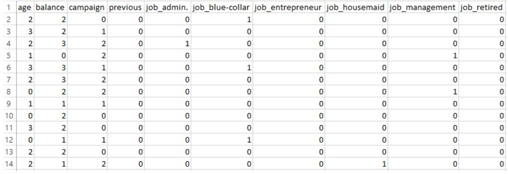

Naïve Bayes is a supervised machine learning algorithm commonly used for classification tasks. It is based on Bayes’ Theorem, a fundamental rule in probability that describes how to update the probability of a hypothesis based on new evidence. The "naïve" aspect comes from the assumption that all features are independent of each other, which simplifies computation. Despite this assumption rarely holding true in real-world data, Naïve Bayes often delivers competitive performance.
Bayes' Theorem allows us to combine prior knowledge (P(H)) with new evidence (P(E|H)) to make predictions. In classification, this means estimating which class label is most likely given the features of a data point. Naïve Bayes applies this by assuming feature independence and using it to efficiently compute these probabilities even in high-dimensional datasets.
The image above illustrates Bayes’ Theorem, which is the foundational concept behind the Naïve Bayes algorithm. It provides a mathematical framework to calculate the probability of a hypothesis (H) given some observed evidence (E).
What Does Naïve Bayes Do in General?
Naïve Bayes calculates the probability that a given input belongs to a certain class based on its features. It evaluates each feature independently and multiplies their probabilities to find the most likely class. The algorithm is probabilistic, meaning it not only classifies the input but also provides the probability behind the classification decision.
In simple terms: “Given these input features, which class is most likely?”
When is Naïve Bayes Used?
Speed and efficiency in both training and prediction.
Robust performance on high-dimensional datasets (e.g., text).
Effectiveness even with limited data.
Interpretability, making it a preferred model in many baseline experiments.
Why is Naïve Bayes Used?
Naïve Bayes is frequently applied in domains that involve classification of structured or text-based data. It is particularly suitable for:
Spam filtering
Sentiment analysis
Medical diagnosis
Document classification
Real-time classification tasks
Types of Naïve Bayes in Scikit-learn
Scikit-learn offers four major variants of the Naïve Bayes classifier. Each is optimized for a specific data distribution and feature type.
Gaussian Naïve Bayes (GNB): Purpose: Handles continuous numeric features. Assumption: Features follow a Gaussian (normal) distribution. Example: Predicting heart disease using age, blood pressure, cholesterol.
Multinomial Naïve Bayes (MNB): Purpose: Designed for discrete count-based features. Assumption: Features follow a multinomial distribution. Example: Spam classification using bag-of-words or TF-IDF.
Bernoulli Naïve Bayes: Purpose: Best for binary (0 or 1) features. Assumption: Features follow a Bernoulli distribution. Example: Binary sentiment classification based on word presence.
Categorical Naïve Bayes (CNB): Purpose: Handles categorical/discrete feature values. Assumption: Features follow a categorical distribution. Example: Insurance risk prediction using region, gender, or job type.
The Multinomial Naïve Bayes algorithm is a supervised classification technique based on Bayes' Theorem. It is especially well-suited for discrete feature data, such as word counts in text classification or frequency-based attributes. What makes it "naïve" is the assumption that all features are conditionally independent given the class label — a simplification that allows the model to perform surprisingly well, even when the assumption doesn’t hold perfectly.
In the Multinomial variant, the algorithm calculates the probability of a sample belonging to each class based on the frequency of features, and then predicts the class with the highest probability. It works particularly well in applications where input features represent counts or proportions, such as spam detection, document classification, or in this case, predicting customer responses to marketing efforts.
Despite its simplicity, the Multinomial Naïve Bayes model is computationally efficient, easy to implement, and often performs competitively with more complex models, especially when the dataset contains categorical or textual features.
This image provides a simplified visual representation of how the Multinomial Naïve Bayes algorithm works. It illustrates the core idea that the model calculates the probability of a data point belonging to a particular class based on the frequency of features, assuming that all features are conditionally independent. Each input feature contributes to the final prediction through a calculated likelihood, which is combined with the overall class probability (prior). This approach makes Multinomial Naïve Bayes particularly effective for categorical or count-based data, as used in this project.
Why Smoothing is Important in Naïve Bayes?
In Naïve Bayes models, particularly the Multinomial variant, smoothing is essential to handle cases where a particular feature-category combination does not appear in the training data. This scenario leads to a zero probability, which can cause the entire posterior probability of a class to become zero — effectively eliminating that class from consideration during prediction.
To prevent this, a technique called Laplace Smoothing (also known as add-one smoothing) is applied. It adjusts the probability estimates slightly to ensure that no probability is ever exactly zero, even for unseen combinations. This makes the model more robust, especially when working with sparse or limited datasets, and improves its ability to generalize to new or rare observations in the test set.
DATASET BEFORE PREPARING FOR MULTINOMIAL NAIVE BAYES
The dataset was carefully preprocessed to align with the assumptions of the Multinomial Naive Bayes model, which requires non-negative, categorical or frequency-based features. The following steps were performed:
Feature Selection: Numerical columns unsuitable for Multinomial Naive Bayes, such as duration, pdays, and day_of_week, were removed to prevent skewed or misleading results.
Binning Numerical Features: Continuous features including age, balance, campaign, and previous were discretized into four quantile-based bins using KBinsDiscretizer. This transformation converted raw numerical values into categorical groupings, ensuring compatibility with the Naive Bayes algorithm.
Encoding Categorical Variables: All relevant categorical features (job, marital, education, default, housing, loan, contact, month, and poutcome) were transformed using one-hot encoding to create binary indicator variables.
Target Encoding: The target variable y (subscription status) was label-encoded as binary: 0 for "no" and 1 for "yes".
Train-Test Split: The processed data was split into training and testing subsets using an 80/20 ratio to evaluate the model’s generalizability.
Why Training and Testing Sets Must Be Disjoint?
It is essential that there is no overlap between the training and testing sets. If the model were tested on data it had already seen during training, the results would be misleading—it could appear to perform better than it actually does in real-world scenarios. A disjoint split ensures that the test results accurately reflect the model's true ability to generalize to new customers.
PART OF THE DATASET AFTER PREPARING FOR MULTINOMIAL NAIVE BAYES
The dataset was successfully preprocessed for the Multinomial Naïve Bayes model, resulting in a feature matrix with 47 columns. The full dataset (prepared_bank_data_nb.csv) contains 45,211 records, which were split into training (train_data_nb.csv, 36,168 records) and testing (test_data_nb.csv, 9,043 records) sets. Importantly, no missing values were found in any of the files, ensuring the data is clean and ready for modeling.
The Multinomial Naïve Bayes model was trained on the preprocessed dataset using an 80-20 train-test split. After fitting the model, predictions were made on the test set.

PART OF THE TRAINING DATASET FOR MULTINOMIAL NAIVE BAYES
Before training the Multinomial Naïve Bayes model, the dataset was divided into features (X) and the target variable (y). The y column, which indicates whether a customer subscribed to a term deposit ("yes" or "no"), was extracted as a separate variable and removed from the feature set. This step ensures that the model is trained only on the input features and does not accidentally learn from the outcome labels. The resulting feature matrix (X_mnb) was then used for model training, while the target series (y_mnb) was used for supervision during learning and evaluation.
Strong recall (97%) for the 'no' class, meaning the model effectively identifies customers unlikely to subscribe.
Lower recall (31%) for the 'yes' class, suggesting potential for improvement through resampling or alternative models.
BERNOULLI NAIVE BAYES
Bernoulli Naïve Bayes is a variant of the Naïve Bayes classification algorithm that is specifically designed for binary or boolean feature data. It is based on the assumption that features follow a Bernoulli distribution, meaning each feature is either present (1) or absent (0) in a given sample.
This model is particularly effective when the input data consists of binary indicators, such as in text classification tasks, where features often represent the presence or absence of specific keywords. Unlike Multinomial Naïve Bayes, which considers feature counts, Bernoulli Naïve Bayes only considers whether a feature appears or not.
The foundation of Bernoulli Naïve Bayes lies in Bayes’ Theorem, which is used to calculate the probability of a data point belonging to a certain class, given the features it contains. The algorithm makes a simplifying assumption that all features are conditionally independent of one another within each class — an assumption that rarely holds true in real-world data, but often still yields good results due to the model’s robustness and efficiency.
Before applying Bernoulli Naïve Bayes, all features must be converted into binary format. In this project, continuous numerical features such as age, balance, campaign, and previous were binarized using quantile-based discretization. This transformation split the data into high and low values. Categorical variables were one-hot encoded, converting each unique category into a separate binary column.
This image offers a clear visual explanation of how the Bernoulli Naïve Bayes algorithm works. It highlights the key idea that the model assumes features are binary—either present (1) or absent (0)—and uses this information to calculate the probability of a data point belonging to each class. The algorithm evaluates the presence or absence of each feature using the Bernoulli distribution, multiplying these probabilities along with the prior probability of each class. This makes it especially effective for datasets with one-hot encoded or binarized features, such as in text classification or, in this case, customer attributes.
Key Characteristics
Works best with binary features (e.g., word present or not).
Uses Laplace smoothing to avoid zero probabilities.
Compares the presence and absence of features in documents.
Simpler and faster than many other classifiers, especially with sparse data.
Limitations
Assumes binary feature values — numeric or count-based features must be preprocessed into binary form.
Performs less effectively when feature frequencies matter more than just their presence.
DATA PREPARATION
DATASET BEFORE PREPARING FOR BERNOULLI NAIVE BAYES
To prepare the dataset for the Bernoulli Naïve Bayes model, the following preprocessing steps were performed:
Created a fresh copy of the original dataset: A new dataframe was created to preserve the original data and avoid unintentional modifications.
Dropped unsuitable columns: Columns such as duration, pdays, and day_of_week were removed as they are either continuous, not binary, or not relevant for the Bernoulli model.
Binarized numerical features: Continuous numerical columns like age, balance, campaign, and previous were discretized into two bins using quantile-based binning, effectively converting them into binary values.
One-hot encoded categorical features: Categorical variables such as job, marital, education, and others were one-hot encoded to represent each category as a binary column.
Converted the dataset to binary integer format: The resulting features were converted to integers (0 or 1) to match the input requirements of the Bernoulli Naïve Bayes classifier. The target column y was label-encoded for classification.
PART OF THE DATASET AFTER PREPARING FOR BERNOULLI NAIVE BAYES
The binarized dataset was split into training and testing sets using an 80–20 split to evaluate the model’s performance on unseen data.
Model Initialization
A BernoulliNB classifier from sklearn.naive_bayes was initialized using default parameters.
Model Training
The model was trained on the binary training data (Xb_train) and corresponding target labels (yb_train) using the .fit() method.
Prediction
The trained model was used to make predictions on the test set (Xb_test) using the .predict() method.
Evaluation
The predicted labels were compared against the true test labels (yb_test) using accuracy_score and classification_report to assess the model’s performance.
PART OF THE TRAINING DATASET FOR BERNOULLI NAIVE BAYES
Overall Accuracy: The model achieved an accuracy of 86.16% on the test dataset.
Majority Class Performance ("no")
Precision: 0.92
Recall: 0.92
F1-score: 0.92
Minority Class Performance ("yes")
Precision: 0.42
Recall: 0.42
F1-score: 0.42
CATEGORICAL NAIVE BAYES
The Categorical Naïve Bayes algorithm is a probabilistic classification model specifically designed for datasets in which all the input features are categorical in nature. Unlike other variants such as Gaussian Naïve Bayes (which assumes features are continuous and normally distributed) or Multinomial Naïve Bayes (which works with frequency or count-based features), Categorical Naïve Bayes operates on data where each feature can take one of a fixed number of discrete values, such as "married", "single", "unemployed", or "tertiary education".
At its core, Categorical Naïve Bayes uses Bayes’ Theorem to calculate the probability that a data point belongs to a particular class, based on the combination of its feature values. It works by learning the likelihood of each category value occurring within each class from the training data. When a new observation is encountered, the model combines these probabilities with prior class probabilities to make a prediction. The "naïve" assumption it makes—that all features are independent given the class—allows it to perform these calculations efficiently, even on high-dimensional data.
Key Features
Accepts unordered categorical values directly without needing one-hot or binary encoding.
Each feature is treated as a categorical variable, and probabilities are learned for each category-class combination.
Often requires label encoding of features (converting categories to integers) before fitting the model.
Uses Laplace smoothing to handle unseen category-class combinations during prediction.
Use Cases
Predicting customer behavior based on categorical survey responses
Classifying risk profiles or insurance claims with label-based data
Any classification task where features are purely nominal and non-numeric
DATA PREPARATION
DATASET BEFORE PREPARING FOR CATEGORICAL NAIVE BAYES
To ensure compatibility with the Categorical Naïve Bayes algorithm, the dataset was carefully preprocessed with the goal of representing all input features as discrete categorical values. Below is a detailed explanation of each step:
Created a fresh copy of the dataset: A new copy of the original dataset was created to avoid modifying the original data and to allow model-specific preprocessing.
Dropped irrelevant or incompatible columns: The columns duration, pdays, and day_of_week were removed. These features were either not meaningful for modeling or not suitable for categorical encoding.
Binned continuous numerical features into discrete categories: Continuous numeric features such as age, balance, campaign, and previous were discretized into four quantile-based bins using KBinsDiscretizer. This transformation converted them into ordinal categorical variables, suitable for use in the Categorical Naïve Bayes model.
Applied ordinal encoding to categorical columns: Categorical features such as job, marital, education, loan, and contact were encoded using Ordinal Encoding, which converts each category into an integer label. Unlike one-hot encoding, this method preserves categorical structure in a format directly usable by the classifier.
Separated features and target variable: The final dataset was split into X_cat (feature matrix) and y_cat (target labels), preparing it for training with the Categorical Naïve Bayes algorithm. The target column y was label-encoded into binary form: "no" as 0 and "yes" as 1.
DATASET AFTER PREPARING FOR CATEGORICAL NAIVE BAYES
The fully preprocessed categorical dataset was divided into training and testing sets using an 80–20 split to evaluate the model’s generalization performance on unseen data.
Model Initialization
A CategoricalNB model from sklearn.naive_bayes was initialized using default parameters.
Model Training
The model was trained on the encoded training data (Xc_train) and corresponding target labels (yc_train) using the .fit() method.
Prediction
The trained model was used to generate predictions on the test set (Xc_test) using the .predict() method.
Evaluation
Model performance was evaluated by comparing predicted labels to the true labels (yc_test) using accuracy_score and classification_report.
Strong performance for the "no" class with a high recall (96%) and F1-score (94%), indicating effective identification of non-subscribers.
Moderate performance for the "yes" class with a precision of 54% and recall of 32%, highlighting potential areas for model enhancement.
RESULTS AND DISCUSSIONS
MULTINOMIAL NAIVE BAYES
The model correctly predicted 7,682 non-subscribers (true negatives) and 335 subscribers (true positives).
It misclassified 270 non-subscribers as subscribers (false positives) and missed 756 actual subscribers (false negatives).
This indicates the model performs well overall, especially for the "no" class, but has room for improvement in detecting "yes" responses — which is typical in class-imbalanced datasets.
BERNOULLI NAIVE BAYES
The model performs reasonably well, identifying the majority of non-subscribers correctly. Compared to MultinomialNB:
• It improved recall for the "yes" class (456 vs. 335 true positives).
• But also introduced more false positives, misclassifying more "no" instances as "yes".
This trade-off shows that BernoulliNB is slightly better at detecting actual subscribers, though it sacrifices some precision on the "no" class.
CATEGORICAL NAIVE BAYES
Compared to MultinomialNB and BernoulliNB:
• It strikes a balance between precision and recall for the "yes" class.
• Fewer false positives than BernoulliNB (295 vs. 617).
• Better true positive count than MultinomialNB (352 vs. 335).
Overall, CategoricalNB offers more balanced performance, especially in handling class imbalance without heavily compromising on either side.
COMPARISON OF ACCURACY ACROSS THE MODELS
The bar chart illustrates the accuracy scores achieved by three different variants of the Naïve Bayes classification algorithm—MultinomialNB, BernoulliNB, and CategoricalNB—when applied to the same marketing dataset.
Multinomial Naïve Bayes achieved the highest accuracy at 88.7%, performing well with count-based features.
Categorical Naïve Bayes followed closely at 88.6%, leveraging ordinal-encoded categorical features.
Bernoulli Naïve Bayes scored 86.2%, with stronger recall for the minority class (“yes”).
ROC CURVE COMPARISON
The Receiver Operating Characteristic (ROC) curve plots the True Positive Rate against the False Positive Rate at different thresholds. The closer the curve is to the top-left corner, the better the model performs.
CategoricalNB achieved the highest AUC at 0.751.
MultinomialNB closely followed with 0.750.
BernoulliNB recorded an AUC of 0.744.
The dashed red line (AUC = 0.5) serves as the baseline.
PRECISION-RECALL CURVES
The Precision-Recall (PR) curve is ideal for evaluating imbalanced datasets. It shows how well a model identifies the minority class (“yes”).
MultinomialNB and CategoricalNB both achieved an AP of 0.405.
BernoulliNB had a slightly lower AP of 0.397.
All models exhibit the common precision-recall trade-off typical in imbalanced datasets.
MultinomialNB and CategoricalNB strike a slightly better balance in identifying actual subscribers without compromising much on precision.
GROUPED BAR CHART FOR PRECISION, RECALL, F1
This bar chart compares how well each Naïve Bayes model predicts the minority class ("yes") using three metrics:
Precision: Of predicted positives, how many were actually correct.
Recall: Of all actual positives, how many were correctly predicted.
F1-score: Harmonic mean of precision and recall.
The best model depends on campaign goals:
• BernoulliNB is best when maximizing outreach (high recall).
• MultinomialNB is best when minimizing waste (high precision).
• CategoricalNB is the most balanced across all three metrics.
ADDRESSING THE DOMINANT "NO" CLASS
Addressing Class Imbalance with SMOTE
SMOTE (Synthetic Minority Over-sampling Technique) is a popular method used to address class imbalance in classification problems. Instead of simply duplicating existing minority class samples, SMOTE generates new synthetic examples by interpolating between actual minority class instances. This helps the model learn more generalizable patterns and reduces bias toward the majority class.
In this project, the original dataset was imbalanced, with the "no" class (non-subscribers) significantly outnumbering the "yes" class (subscribers). To counter this, SMOTE was applied only to the training set, creating a balanced distribution of both classes. This ensured that the Multinomial Naïve Bayes model had equal exposure to examples from both classes during training, helping it better detect potential subscribers.
Although SMOTE improved the model's recall for the "yes" class, it also introduced more false positives, lowering precision. This trade-off was addressed further through threshold tuning, which aimed to find the optimal balance between precision and recall.
The model exhibits high precision but low recall for the "no" class, indicating accurate predictions but a tendency to miss actual non-subscribers.
For the "yes" class, precision is low, suggesting many false positives, while recall is relatively high, meaning more actual subscribers are identified.
This behavior reflects the model's bias toward recall for the minority class, influenced by the application of SMOTE.
The outcome highlights a trade-off: improved detection of subscribers comes at the cost of increased misclassification of non-subscribers.
THRESHOLD TUNING
In binary classification, models typically use a default probability threshold of 0.5 to assign class labels—predicting a sample as positive ("yes") if the predicted probability is greater than or equal to 0.5. However, this default threshold may not yield the best results, especially in imbalanced datasets where one class is significantly underrepresented.
To improve the model’s performance on the minority class ("yes"), threshold tuning was performed. Instead of relying on the default threshold, the model’s predicted probabilities for the "yes" class were evaluated across a range of thresholds (from 0.0 to 1.0 in small increments).
The model’s predictions were recalculated for each threshold value.
Precision, Recall, and F1-score were computed specifically for the "yes" class.
INTERPRETING THE THRESHOLD TUNING PLOT
The plot above illustrates how precision, recall, and F1-score for the "yes" class change across different classification thresholds. The goal was to identify the threshold that best balances precision and recall, as measured by the F1-score.
At lower thresholds, the model classifies more instances as "yes", resulting in high recall but low precision due to an increase in false positives.
At higher thresholds, the model becomes more conservative in predicting "yes", which increases precision but reduces recall.
The F1-score curve (green line) highlights the trade-off and identifies the best threshold for balanced performance.
The optimal threshold was found to be approximately 0.735, as indicated by the red dashed line. At this point, the F1-score for the "yes" class reached its maximum.
This fine-tuning enables the model to make more effective marketing predictions—improving its ability to identify potential subscribers while minimizing false alarms.
FINAL MODEL EVALUATION WITH TUNED THRESHOLD
After applying threshold tuning (best threshold ≈ 0.735), the Multinomial Naïve Bayes model demonstrated improved balance between precision and recall, particularly for the minority "yes" class.
Improved recall for the "yes" class (from 0.31 at default threshold to 0.46).
Better F1-score for "yes" (from 0.35 to 0.43), indicating more balanced performance.
Slight drop in precision, but a worthwhile trade-off given the better identification of actual subscribers.
Overall, this tuned model is more effective at identifying likely subscribers without significantly compromising performance on the majority class.
=== FINAL MODEL EVALUATION WITH TUNED THRESHOLD ===
Accuracy: 0.8543
Classification Report:
precision recall f1-score support
no 0.92 0.91 0.92 7952
yes 0.41 0.46 0.43 1091
accuracy 0.85 9043
macro avg 0.67 0.69 0.67 9043
weighted avg 0.86 0.85 0.86 9043
Confusion Matrix:
[[7221 731]
[ 587 504]]
The model correctly predicted 504 actual subscribers, a significant improvement over previous results using the default threshold.
False positives (731) slightly increased, indicating more non-subscribers were misclassified as subscribers.
False negatives (587) were reduced compared to the default threshold, meaning fewer actual subscribers were missed.
This updated balance leads to a better F1-score for the minority class, making the model more effective for targeting likely subscribers in a marketing context.
FEATURE EXPLORATION – INDICATORS OF SUBSCRIPTION
The analysis identified the top 10 features most strongly associated with a customer subscribing to a term deposit ("yes"). These were ranked based on their influence in the model, with higher values indicating stronger positive association with the target class.
poutcome_success (2.66) – Customers who had a successful outcome in a previous campaign are much more likely to subscribe again.
month_mar (2.31) – Contacts made in March were significantly more successful.
month_sep (2.16) – September also showed high likelihood of positive response.
month_dec (2.10) – December contacts correlated well with subscription.
month_oct (1.99) – October was another impactful campaign month.
job_student (1.24) – Students were more likely than average to subscribe.
month_apr (0.89) – April showed moderate positive association.
job_retired (0.89) – Retired individuals responded well to campaigns.
month_feb (0.60) – February had mild predictive power.
job_unemployed (0.53) – Surprisingly, even unemployed individuals showed some positive interest.
=== FEATURE EXPLORATION ===
Top 10 features most indicative of 'yes':
poutcome_success: 2.6608
month_mar: 2.3094
month_sep: 2.1556
month_dec: 2.1045
month_oct: 1.9884
job_student: 1.2429
month_apr: 0.8889
job_retired: 0.8885
month_feb: 0.6030
job_unemployed: 0.5270
FEATURE INSIGHTS
Previous campaign success (poutcome_success) is the strongest predictor of future subscriptions.
Specific months—notably March, September, December, and October—align with higher engagement, highlighting seasonal trends in customer responsiveness.
Demographic segments such as students and retired individuals are more likely to subscribe, indicating that targeted campaigns for these groups could enhance marketing effectiveness.
CONCLUSION
This study applied multiple variants of the Naïve Bayes algorithm to predict whether a customer is likely to subscribe to a term deposit based on their personal, financial, and interaction history with the bank. Despite the simplicity of Naïve Bayes models, they proved to be surprisingly effective for this marketing prediction task—particularly when paired with thoughtful preprocessing, class balancing, and threshold tuning.
One of the most valuable takeaways is that even basic models can yield meaningful insights when properly tuned. By addressing the imbalance between subscribers and non-subscribers using techniques like SMOTE, and by fine-tuning decision thresholds, we were able to significantly improve the model's ability to detect potential subscribers—without sacrificing overall accuracy.
From a business standpoint, the findings revealed that past campaign success, certain contact months (like March, September, and December), and customer demographics such as students and retirees are strong indicators of future subscription interest. This knowledge can directly inform how and when to engage different segments of customers, helping the bank personalize its outreach strategy for better results.
While Naïve Bayes may not always outperform more complex models, its transparency, efficiency, and interpretability make it a reliable starting point for predicting customer behavior in marketing campaigns. The models built here not only help identify which customers are most likely to respond positively—but also offer clear, actionable insights that can drive smarter and more strategic marketing decisions.